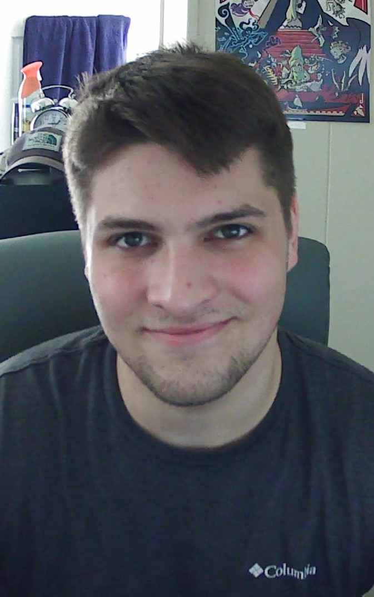

Dannisse Arenas
Dannisse Arenas is an Undergraduate Student at Old Dominion University,
who is currently in her senior year. She is majoring in Computer Science
with a double minor in Computer Engineering and Applied Mathematics.
Formerly, she interned with NASA in the Summer 2021, while working as a Sales Associate
at American Eagle Outfitters. Her goal is to utilize her computer and software skills
to obtain a job as a software engineer. On days off, she enjoys playing video games,
watching anime, and creating indie video games using Unity.
Team role: UI/UX, Testing
Estefania Barron
Estefania Barron is an undergraduate student at Old Dominion University where she
studies Computer Science. She is currently a Technology Operations intern at NBCUniversal.
Formerly an intern at NASA, Estefania worked with the Data Science team leveraging machine
learning to build applications that helped users better understand and visualize data.
Before her time at NASA, she worked as a Creative Technology Intern at OUTFRONT Media.
In her free time, Estefania enjoys reading, listening to true crime podcasts, and
browsing real-estate websites for apartments she hopes she'll be able to afford one day.
Team role: Database, Algorithms
Tanner Henderson
Tanner Henderson is a senior undergraduate Computer Science student at
Old Dominion University who has a minor in Actuarial Mathematics. Tanner also studied
for two semesters at George Mason University before transferring to Old Dominion.
During Tanner's free time, he generally enjoys playing video games, puzzles, and soccer,
as well as socializing with friends and family both online and in person.
Team role: Database, Legacy interfaces
Jason Palos
Jason Palos is an undergraduate senior student at Old Dominion University.
While sporting a couple elementary school Science Award ribbons on his wall at home,
he plans on advancing his current Associates in Computer Science into a Bachelors in
Computer Science. In his free time, Jason enjoys the great outdoors, video games and
spending time with the people around him.
Team roles: Database, testing
William Sanders
William Sanders is an undergraduate senior at Old Dominion University studying
Computer Science and minoring in Military Leadership. After graduation, he will
commission into the Navy as a surface warfare officer. Will enjoys working out,
playing video games, and writing music in his free time.
Team roles: UI/UX, testing
Matthew Stephens
Matthew Stephens is an undergraduate computers science major at Old Dominion University
in his senior year. He works part time at the Virginia Living Museum in the guest services
and marketing departments. He wants to go on to web development using the skills and
knowledge he gains at school. Matt is an avid reader of all things fantasy and science
fiction, and loves tabletop games.
Team roles: Lead, website content specialist, legacy interfaces
Trey Rankin

Trey Rankin is an senior at Old Dominion University studying Computer Science.
He is also a Navy Midshipman and will be commissioning in May 2022. His goal is
to be a Student Naval Aviator when he commissions. He enjoys playing video games,
working out, and hiking.
Team roles: Website content specialist, algorithms
Mentor: Laura Sakos
Job Titles: Principal Systems Engineer, MITRE Hampton Roads Site Leader.
She work with DoD customers to define concepts and requirements for new airborne command
and control systems.